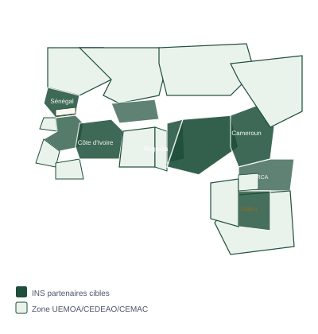

Une distinction qui n'appartiendra qu'à un seul INS sur le continent
Le siège social de l'Association statAfrikR est établi en France (17 rue du Chêne Tordu, 77500 Chelles). Le premier INS dont le Directeur Général formalisera ce partenariat devient le Partenaire Fondateur officiel et accueille le point focal national de référence de l'Association sur le continent africain — cité dans toutes les publications, événements et communications de l'Association, à perpétuité.
L'échange
Un partenariat mutuellement bénéfique
🏛️ Votre INS apporte
✓ Votre INS reçoit
Processus d'admission
7 étapes pour devenir partenaire fondateur
Documents prêts
5 documents disponibles immédiatement
Lettre de demande de partenariat
Lettre formelle à l'attention du Directeur Général, résumant l'opportunité et les modalités du partenariat.
Format Word · À personnaliser
Note de cadrage institutionnel
Note complète présentant l'Association, sa gouvernance, son modèle économique et sa feuille de route 2026–2028.
Format Word · 7 sections
Projet de protocole d'accord (MoU)
Projet de protocole d'accord prêt à discuter : 9 articles couvrant les engagements réciproques et les conditions du partenariat.
Format Word · Prêt à signer
Présentation statAfrikR
Présentation officielle du package R : architecture 5 modules, 40 fonctions, pipeline, avant/après, roadmap.
Format Word · 8 sections
Programme de formation 10 jours
Programme détaillé : objectifs, contenu jour par jour, livrables, méthodes pédagogiques et impact attendu.
Format Word · 7 sections
Contacter Dikers Amoko
Pour recevoir les 5 documents par email ou pour organiser un entretien en présentiel ou en visioconférence.
Écrire maintenant →Zones cibles
INS d'Afrique de l'Ouest et Centrale

Zones prioritaires
L'Association statAfrikR cible en priorité les INS d'Afrique de l'Ouest et Centrale pour son premier cercle de partenaires fondateurs. L'extension à l'Afrique de l'Est et Australe est prévue en Phase 2 (2027).
Objectif : 5 INS fondateurs en 2027 · 10 INS membres actifs en 2028.
Je veux accueillir l'Association